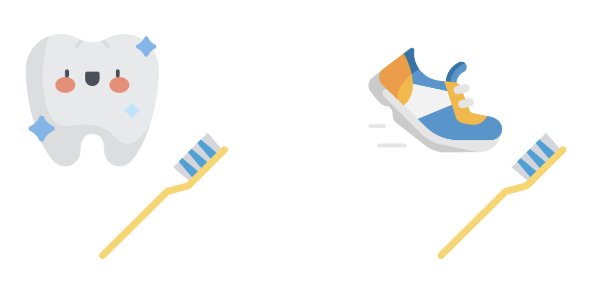
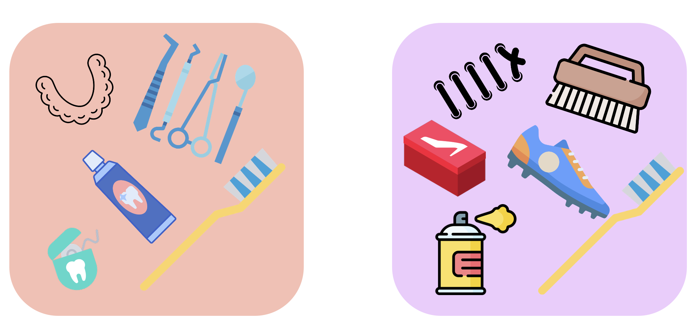
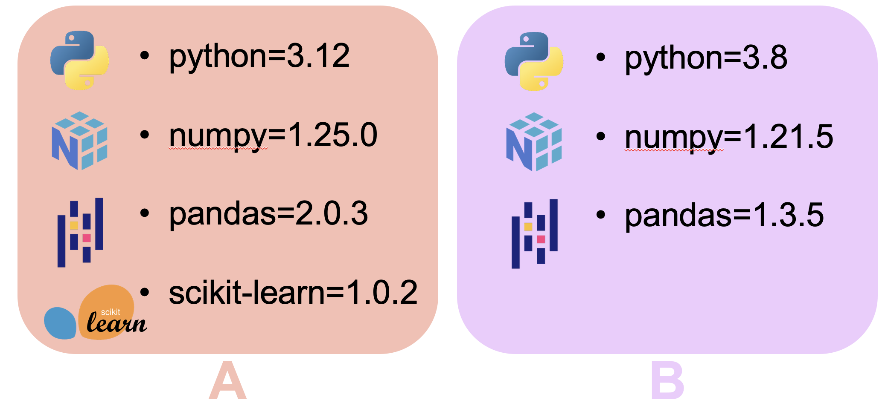
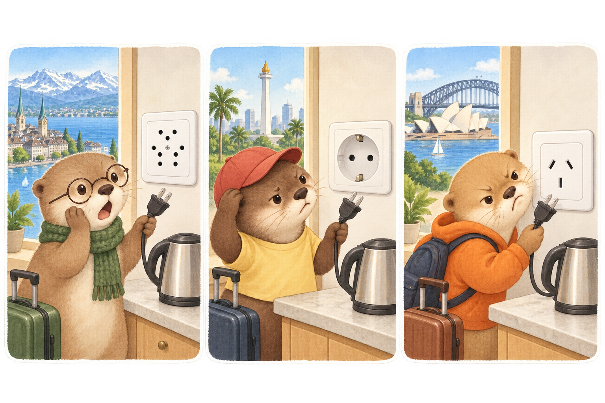
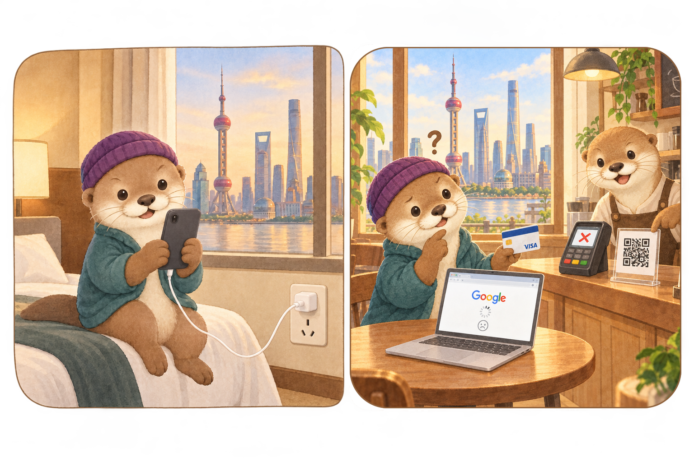
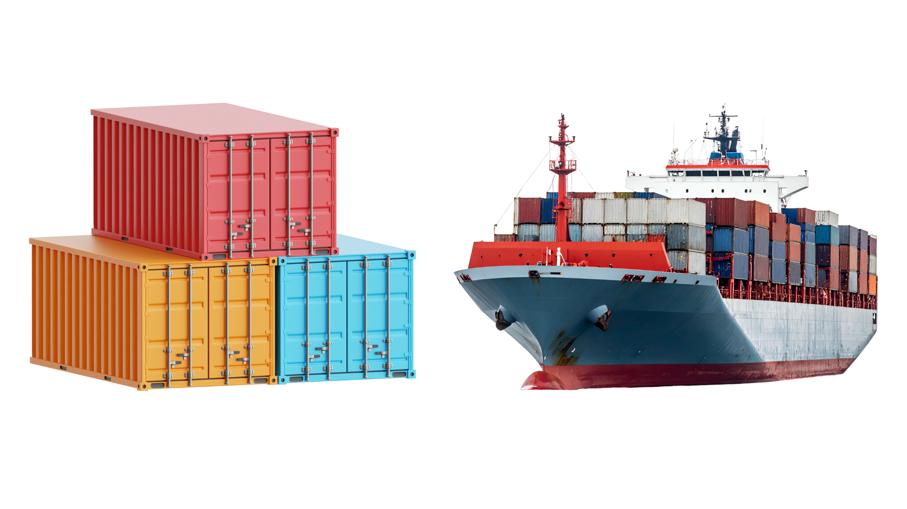
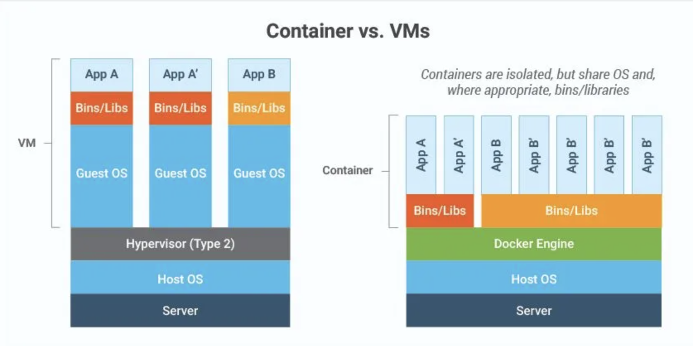

DSCI 522 Lecture 2
uv Lock Files, Containerization, and Docker
Sky Sheng
Before we start: pull today’s Docker images
Open Docker Desktop, then run this in your terminal. Leave it running.
Recap: Branches and Pull Requests (PR)
Commands we ran in class: merge conflicts
# 1. look at the history (arrow keys to scroll, / to search, n for next match, q to quit)
git log
# 2. see what changed, then commit locally
git status
git add .
git commit -m "commit locally"
# 3. push is rejected: GitHub has commits you do not have yet
git push
# 4. tell Git to merge when it pulls, then pull
git pull
git config pull.rebase false
git pull
# 5. fix the conflict in the file, then commit the fix and push
git add .
git commit -m "solve merge conflict manually"
git push
# 6. (optional) go back in time to an old commit, then come back to main
git checkout <commit hash>
git switch mainCommands we ran in class: branches and pull requests
# 1. create a new branch called "opinions" and switch to it
git switch -c opinions
# 2. list your branches (-v: with their last commit, -a: also the ones on GitHub)
git branch -v
git branch -a
# 3. commit your changes on the new branch
git add .
git commit -m "make all the changes"
# 4. the first push of a new branch must say where it goes on GitHub
git push -u origin opinions
# 5. back on main: the changes from "opinions" are not here yet
git switch main
# 6. open a pull request on GitHub, review it, merge it, then bring the merge home
git pull
# 7. delete the branch on your computer, then on GitHub
git branch -d opinions
git push origin -d opinionsClean, well documented and distributable code
| Practice | Benefit |
|---|---|
| Well-documented | Easily understandable |
| Modular code | Easy to reuse |
| Well-tested code | Reliable |
| Portable across machines | Easily accessible |
Source: Ma, E. J. (2024, October 25). The Human Dimension to Clean, Distributable, and Documented Data Science Code.
Why do we need virtual environment?

Toothbrushes for different “projects”

Which toothbrush should I use for my oral hygiene??
Organize tools into separate boxes

Organize programming language & packages into separate virtual environments

Different virtual environment management tools
For R:
- uv
- packrat
- renv
- conda
For Python:
- uv
- venv
- conda
- poetry
- pipenv
- …
Recap: uv
MDS is sending you abroad
MDS sponsors three of you to teach data science for a term: in Zurich, Jakarta and Sydney.
MDS already bought each of you a laptop, a kettle and an electric toothbrush in Vancouver.
Should MDS just ship you the box?
MDS otters arriving abroad

In Zurich, Jakarta, Sydney, the Vancouver plugs do not fit!
Image generated by OpenAI gpt-image-2.5-sunburst.
A shopping list and a receipt
pyproject.tomlis the shopping list: what you asked for (e.g., “pandas”)uv.lockis the receipt: the exact models, charger and cable included, with a plug for every country (pandas 3.1.1, numpy 2.5.5, …).python-versionsays which Python to use (3.14).venv/is the box bought in Vancouver, it only has one Canadian plug that only works here!
MDS should send you the list, the receipt and the Python version.
Never ship the box (.venv/)!
Demo: create a uv project
Live demo in the terminal: create the environment, add a package, look inside the files.
- DSCI 521 notes: Virtual environments with uv
- Textbook: Python + uv projects, sharing a uv environment
Commands we ran in class: create a uv project
# 1. make a new folder for the project and move into it
mkdir -p ~/Desktop/uv_demo
cd ~/Desktop/uv_demo
# 2. create the project: this only makes pyproject.toml
uv init --bare
# 3. choose the Python version: this makes .python-version
uv python pin 3.14
# 4. add a package: this updates pyproject.toml, writes uv.lock and builds .venv/
uv add pandas
# 5. look at what we got
ls -a
cat pyproject.toml
cat .python-version
# 6. run Python inside the environment
uv run python -c "import pandas; print(pandas.__version__)"What you asked for
Only the packages you asked for. Short enough to read and edit by hand.
What you got: uv.lock
[[package]]
name = "pandas"
version = "3.1.1"
source = { registry = "https://pypi.org/simple" }
dependencies = [
{ name = "numpy" },
{ name = "python-dateutil" },
{ name = "tzdata", marker = "... or sys_platform == 'win32'" },
]
sdist = { url = ".../pandas-3.1.1.tar.gz", hash = "sha256:05fed3e3..." }
wheels = [
{ url = ".../pandas-3.1.1-...-macosx_11_0_arm64.whl", hash = "sha256:862f6fbe..." },
{ url = ".../pandas-3.1.1-...-manylinux_2_28_x86_64.whl", hash = "sha256:326459d8..." },
{ url = ".../pandas-3.1.1-...-win_amd64.whl", hash = "sha256:fdd87cf4..." },
]This is a shortened version of the real uv.lock file, which lists 32 pandas wheels, one per operating system and chip.
How many packages did you actually get?
The breast cancer predictor’s pyproject.toml vs its uv.lock:
html`<div class="lock-head"><span class="asked">${lock_summary.asked} asked for</span> in pyproject.toml, <span class="pinned">${lock_summary.pinned} pinned</span> in uv.lock</div>
<div class="ojs-readout" style="text-align: center;">${Object.assign(document.createElement("span"), {innerHTML: lock_readout[lock_pick]})}</div>
<div class="lock-grid">${lock_pinned.map(name => {
const kind = [
"lock-chip",
lock_asked.includes(name) ? "asked" : "",
name === lock_pick ? "pick" : "",
lock_pulls[lock_pick].includes(name) ? "on" : "",
name in lock_os_only ? "os" : ""
].join(" ");
const tag = name in lock_os_only ? html`<small> ${lock_os_only[name]} only</small>` : "";
return html`<span class="${kind}">${name}${tag}</span>`;
})}</div>
<div class="lock-key"><span class="c-blue">blue</span>: in pyproject.toml, <span class="c-orange">orange</span>: pulled in by your pick, dashed: only installed on one operating system</div>`Make uv add write exact versions
By default uv add writes “this version or newer” into the shopping list:
Add these two lines to pyproject.toml
Every uv add from now on will write the exact version using ==:
Tip
Your milestone 1 should use exact versions too!
Your teammate’s side: uv sync
- Your teammate clones the repository: they get the list, the receipt and the Python version, but no
.venv/ uv syncbuilds.venv/fromuv.lock, exactly as on your computeruv run ...runs any command inside that environment
Commands we ran in class: rebuild the environment
| You want to… | Command |
|---|---|
| add a package | uv add pandas |
| remove a package | uv remove pandas |
rebuild the environment from uv.lock |
uv sync |
| run something in the environment | uv run python script.py |
From virtual environments to containers
iClicker: What can still go wrong?
Your teammate cloned your project and ran uv sync. The report still does not render on their laptop. What could still be different?
- (A) The Python packages
- (B) The operating system and its system libraries
- (C) Other software, like Quarto or
make - (D) Both B and C
Meanwhile, in Shanghai
A fourth student goes to Shanghai…

Image generated by OpenAI gpt-image-2.5-sunburst.
What uv.lock covers, and what it does not
The breast cancer predictor needs:
Pinned by uv? |
|
|---|---|
| Python 3.14 | ✅ |
| pandas, scikit-learn, altair, … | ✅ |
| Quarto, to render the report | ❌ |
make, to run the whole pipeline (lecture 7) |
❌ |
| The operating system and its system libraries | ❌ |
We need to ship the whole computer setup, not just the Python packages.
A container is a shipping container for software

Demo: run your first container
Demo: run a container and look around
Textbook: Using and running containers
Commands we ran in class: run a container
# 0. Mac and Windows: open Docker Desktop first
# 1. download an image from Docker Hub, then list the images on your computer
docker pull python:3.14-slim
docker images
# 2. Python on your laptop vs Python in the container
# (in the container's Python: import sys, then sys.version; leave with exit())
python3 --version
docker run -it python:3.14-slim
# 3. a stopped container still hangs around: find it and remove it
docker ps -a
docker rm <container_id>
# 4. --rm deletes the container when you leave, bash opens a shell instead of Python
docker run --rm -it python:3.14-slim bash
cat /etc/os-release # Debian Linux, even on a Mac
ls /
exitHow does the container see my files?
It cannot, unless you mount a folder with -v:
-v "/$(pwd)":/home/project: this folder on your laptop shows up as /home/project inside the container
Commands we ran in class: mount a folder
# 1. make a folder for the demo and move into it
mkdir -p ~/Desktop/docker_demo
cd ~/Desktop/docker_demo
# 2. write a tiny script (paste the 3 lines below, then Ctrl + X, Y, Enter)
nano hello.py
# 3. run it on your laptop, then inside the container
python3 hello.py
docker run --rm \
-v "/$(pwd)":/home/project \
python:3.14-slim \
python /home/project/hello.py
# 4. the image has Python, but not our packages
docker run --rm python:3.14-slim python -c "import pandas"Start the model server in the background
-d(detach): run in the background, give me my terminal back--name llm: a name we choose, so we do not need the container ID-v "/$(pwd)/models":/root/.ollama: downloaded models are saved inmodels/on your laptop
A server inside a container. How does your laptop talk to it?
Talk to the container through a port
-p 11434:11434: http://localhost:11434 on your laptop goes to port 11434 in the container
Same question, same answer?
Run it three times: Otterly, Smokey, Puddle… NOT reproducible!
Where is the model?
- The model was downloaded before class, by a container that no longer exists
-vsaved it inmodels/on my laptop, so every new container finds it again
Commands we ran in class: run a local LLM (1/3)
# 0. at home, NOT on classroom wifi (about 4 GB): get the image and the model
mkdir -p ~/Desktop/llm_demo
cd ~/Desktop/llm_demo
docker run -d --rm --name llm \
-v "/$(pwd)/models":/root/.ollama \
ollama/ollama:0.40.16
docker exec llm ollama pull qwen2.5-coder:1.5b
docker stop llm
# 1. start the model server in the background
docker run -d --rm --name llm \
-p 11434:11434 \
-v "/$(pwd)/models":/root/.ollama \
ollama/ollama:0.40.16
docker ps
# 2. talk to it through the port, then chat inside the container (/bye to leave)
curl http://localhost:11434
docker exec -it llm ollama run qwen2.5-coder:1.5bCommands we ran in class: run a local LLM (2/3)
# 3. ask the same question 3 times, then 3 times with a fixed seed
curl http://localhost:11434/api/generate -d '{
"model": "qwen2.5-coder:1.5b",
"prompt": "Give a name for a pet otter. Reply with the name only.",
"stream": false
}'
curl http://localhost:11434/api/generate -d '{
"model": "qwen2.5-coder:1.5b",
"prompt": "Give a name for a pet otter. Reply with the name only.",
"stream": false,
"options": {"seed": 522, "temperature": 0}
}'Commands we ran in class: run a local LLM (3/3)
# 4. stop it (--rm deletes it), start it again with an environment variable
docker exec llm ollama ps
docker stop llm
docker run -d --rm --name llm \
-p 11434:11434 \
-v "/$(pwd)/models":/root/.ollama \
-e OLLAMA_KEEP_ALIVE=1h \
ollama/ollama:0.40.16
# 5. the model is still there, and now stays loaded for 1 hour
docker exec llm ollama list
docker exec llm ollama ps
docker stop llmAnatomy of docker run
| Flag | What it does |
|---|---|
-d |
run in the background (detach) |
--rm |
delete the container when it stops |
--name |
give the container a name |
-it |
interactive: let me type into it (not needed for servers) |
-p laptop:container |
connect a port |
-v laptop:container |
mount a folder |
-e NAME=value |
set an environment variable |
Image vs container
- An image is like the Chrome app installed on your computer
- A container is like a Chrome window you open from it
- You can open many windows from one app, and closing a window does not uninstall Chrome
| List them | Delete one | |
|---|---|---|
| Images | docker images |
docker rmi <image> |
| Containers | docker ps -a |
docker rm <container_id> |
Where do images come from?
From a registry, which is like GitHub but for images. Docker Hub is the default.
quay.io/jupyter/datascience-notebook:2025-03-14
ollama/ollama:0.40.16
python:3.14-slim
registry (none means Docker Hub), image name, tag (the version)
⚠️ Never use the tag latest. Docker will not update a latest you already have, so you and your teammate can end up with different images.
Virtual environment vs container vs virtual machine
| Virtual environment | Container | Virtual machine | |
|---|---|---|---|
| Isolates | Python and packages | … plus other software, the operating system’s libraries, files and ports | … plus a whole operating system |
| Example | uv |
Docker | VirtualBox |
| Size | Extremely light | Light | Heavy |
Where to find things
| What | Where |
|---|---|
| uv | DSCI 521 notes, uv cheatsheet |
| Containers | Textbook: Introduction to containerization, Using and running containers |
| Docker commands | Docker cheatsheet |
| (Optional) Open-source LLM models | Ollama |
| (Optional) LLM Arena leaderboard | LLM Arena leaderboard |
(Bonus) Virtual Machine vs. Container

Source: eG innovations
(Bonus) Which port is free on my laptop?
Only one program can listen behind each door. List the doors that are taken:
# every port a program is listening on (macOS, Linux)
# lsof: "list open files" (a network door counts as a file)
# -iTCP: TCP doors only, -sTCP:LISTEN: only programs waiting at their door
# -n, -P: print raw IP and port numbers, skip the slow name lookup
lsof -iTCP -sTCP:LISTEN -n -P
# one port: no output means it is free
lsof -i :11434
# Windows: -a all doors, -n numbers, -o process ID; findstr keeps matching lines
netstat -ano | findstr :11434- If the port is taken, Docker says
port is already allocated. Change only the laptop side:-p 11435:11434, thencurl http://localhost:11435 - ⚠️ On macOS, avoid 5000 and 7000: AirPlay Receiver uses them